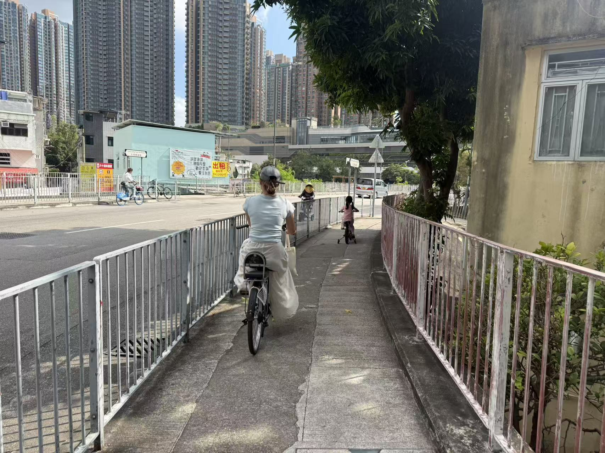
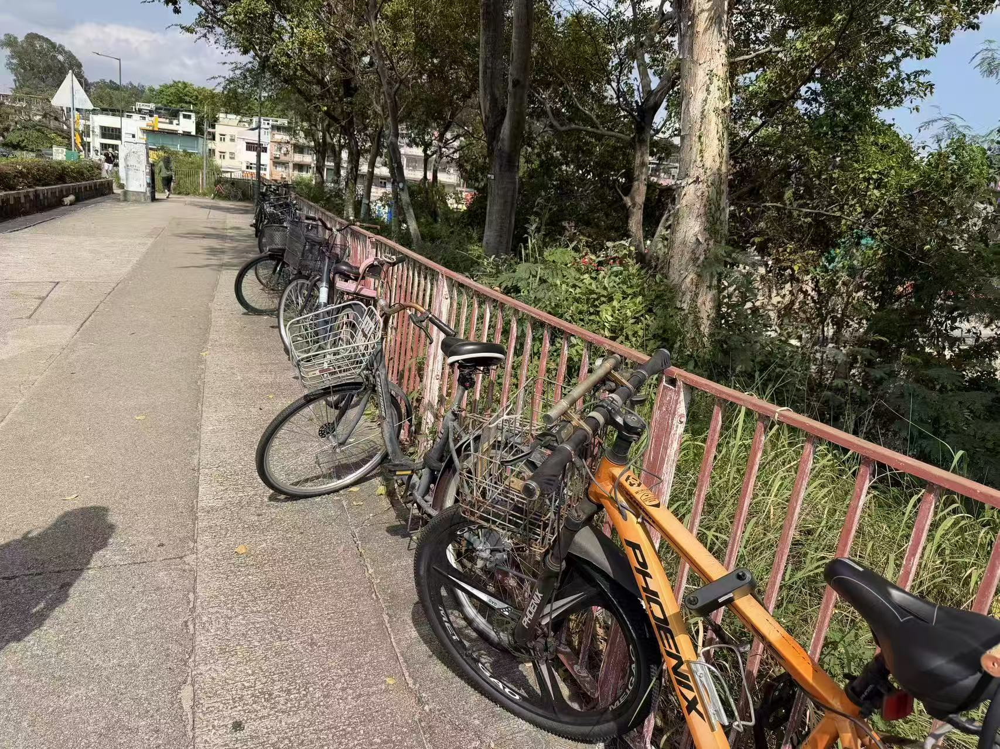

【數據】在新界踩單車代步：路要接得上，車要有處泊
新界居民已用單車返工、買餸，沿途有時要轉入行車道或下車推行，到埗還要找地方泊車。記者分析運輸署公共泊位資料，發現新界947個工業地址中，逾半在500米直線範圍內未錄得泊位。北部都會區正規劃推動單車代步，現有路網的使用經驗，反映路線與停泊設施如何配合居民日常行程的問題。
- 文字
- 倪晉成、查言潞
- 數據
- 於夏涵、田若雯
- 設計
- 方嘉雨、吳佳栩
- 工程
- 方嘉雨、吳佳栩、陳曉琳
- 查核
- 鄺芍宜
- 責任編輯
- 王悅
- 刊出
居民用單車返工也買餸
記者選取一段代步路線實測，記錄沿途如何接續，以及轉入行車道、下車推行或繞路所需的時間。
跟着鏡頭走一程。在YouTube觀看影片
記者訪問單車使用者，了解他們平日怎樣用單車，以及離開單車徑後如何繼續行程。
在朗屏受訪的許先生說，附近有許多工廠，部分員工住得近，平日會踩單車上下班。「幾分鐘、10分鐘的路程嘛，就是代步了。」在他看來，單車既方便附近員工返工，周末亦可用來遊玩。
同在朗屏受訪的蘇女士，則經常會踩單車去超市。
離開單車徑後須另覓通路
一程路未必由頭踩到尾。被問到遇上沒有單車徑的路段怎樣走，蘇女士回答：「推着車。」
許先生則對駛上馬路有顧慮：「你在外面騎的話，你會覺得很危險，跟車騎就是不安全嘛。」他留意到，區內仍有不少人在行人路踩車，並認為這與單車友對車流的顧慮有關。

騎行者於行人道上騎車，方嘉雨
在元朗受訪的陳先生，表示會在馬路上踩單車，「如果你相信自己的技術，就在馬路上騎，不然還是在人行道上推吧。」
若選擇經行人路繼續行程，便須下車推行；在行人路踩單車則涉及違例。
一段單車代步行程，可以由住所通往寫字樓、工廠或商場；若要轉乘公共交通，車站便是這段單車行程的終點。兩端有沒有地方停泊，中間的路如何接續，都是居民每天要處理的事。
現有的單車徑及配套，能否讓新界居民方便地完成這些日常行程？
工業地址附近泊位不足一半
記者將新界公共泊位位置，與屋邨、工商業樓宇、房委會商場及鐵路站資料比對，發現屋邨和車站附近錄有泊位的比例較高，工業地址則不足一半。
以500米直線範圍計算，135個屋邨中，94個的位置點附近錄有公共泊位，佔69.6%；947個工業地址中，則有432個，佔45.6%。其餘515個未錄得泊位的工業地址，344個位於葵青或荃灣，佔約三分之二。
寫字樓或商業地址附近錄有公共泊位的比例約53%，房委會商場約68%，鐵路站則約79%。同樣在新界，到不同地方返工、購物或轉車，附近的公共停泊配套也有差別。
屯門區議員葉文斌指出，不少公共單車泊位距離住所及公共設施較遠。部分居民為求方便，便把單車停在屋苑內或者路邊。

單車在指定泊位外違例停泊。攝影：於夏涵
泊車方便之外還須顧及保安
單車留下數小時，保安也是停泊安排的一部分。
許先生亦表示，同事的單車曾在停泊期間被偷。「他們車在那裏經常被偷的，特別是那種新一點的。」
蘇女士親身經歷過單車被盜，「車明明鎖了，但還是不見了。」
單車設施的交通管理、維修及違泊清理，由不同部門分工處理。在屯門，運輸署研究泊位安排，民政處統籌聯合清理，地政處處理非法佔用政府土地的單車，食環署則清理棄置的破爛單車。葉文斌表示，居民反映問題時，有時難以找到負責跟進的部門。
住所與目的地兩端的泊位，決定居民能否方便地取車、存車。下一步，便是兩端之間的路如何接起來。
單車徑盡頭須匯入車流或推行
蘇女士在沒有單車徑的路段會推行；陳先生會轉入馬路；許先生則對車流有所顧慮。
這些經驗涉及單車徑與下一段路的接續。沿地圖查看，可以辨認單車徑通往哪些地方
運輸署《道路使用者守則》列明，單車徑終止後，單車駛入一般道路須察看車流，在有安全空間時才匯入；沿途部分過路位置則要求下車推行。
資料來源：運輸署《道路使用者守則》第四章「單車徑」。
朗屏站出口附近通行場景示意。依據記者現場照片，以 Cinemap 建模、TapNow 渲染，展示由騎行轉為下車推行的過程。AI生成畫面，非現場實拍；建築、人物及設施位置可能與現場有差異。製圖：方嘉雨在YouTube觀看影片
行車道事故的嚴重後果佔比較高
居民對車流的顧慮，可以與事故後果對照。
2025年，警方全港錄得的單車傷亡交通意外中，單車徑有940宗，行車道路有841宗。
單車徑的940宗事故中，930宗屬輕微事故，佔98.9%。致命及嚴重事故合計佔1.1%，行車道路的相應比例則為3.9%。單車徑錄得的事故較多，行車道路的已呈報事故則有較高比例造成致命或嚴重後果。
若一程代步要經過兩類道路，單車徑盡頭如何接續、在哪裏過路及匯入車流，都會影響餘下路程怎樣走。
北都擬將代步配套納入規劃
現有社區要增設單車徑，須重新分配有限的道路空間。葉文斌認為，北都的條件有所不同：新發展區有較充足的空間，可以在規劃之初便納入居民代步的需要，安排單車徑連接住所、運輸樞紐及區內主要目的地。
2026年《運輸策略藍圖》提出，以「單車主幹道」連接鐵路站、運輸交匯樞紐及主要目的地，再由「地區單車徑」深入區內不同用地。主幹道亦會引入單車過路處及燈號，減少下車過路的需要。
在停泊方面，政府建議將單車泊位納入土地用途的附屬設施，按用地需要提供泊位。藍圖亦提出，新發展區單車網絡的200米範圍，目標連接90%以上住宅用地，並配合各區基礎設施逐步落實。
資料來源：運輸及物流局《運輸策略藍圖》建議23及24，第104至105頁。
新田科技城的官方規劃圖，已標示擬建單車徑、泊位及交通樞紐，亦列出連接古洞北和現有新界西北單車網絡的方向。
北都以日常代步為規劃方向。居民能否沿路到達工作地點或車站、到埗後能否停泊，是檢視這項規劃落實的具體尺度。這些安排能否隨住宅和交通設施同步落實，將決定居民入伙後，單車能否真正成為日常代步的選擇。
新界單車代步資料來源與研究方法
以下說明圖表及正文使用的資料、計算方法和限制。設施分析以新界為範圍，包括離島區；交通習慣及事故數字則涵蓋全港。「查閱日期」與下載日期分開列示。
七項統計與地理資料
1. 單車資訊：單車徑及公共單車泊位｜機構：運輸署；發布或更新日期：資源首次發布於2022年4月6日；取得日期：2026年9月28日下載；用於單車徑分佈地圖、公共泊位位置及記錄容量，以及住所和目的地附近的泊位比較。
2. 公共租住屋邨位置資料｜機構：香港房屋委員會；發布或更新日期：資源首次發布於2016年7月1日；取得日期：2026年9月30日下載；用於新界公共屋邨位置及附近公共泊位分析。
3. 商場位置資料｜機構：香港房屋委員會；發布或更新日期：資源首次發布於2016年7月1日；取得日期：2026年10月28日下載；用於新界房委會商場位置及附近公共泊位分析。
4. 樓宇資料及樓齡紀錄｜機構：屋宇署；發布或更新日期：資源首次發布於2023年8月30日；取得日期：2026年10月28日下載；用於篩選新界寫字樓／商業及工業地址，分析附近公共泊位。
5. 社區地理數據庫iGeoCom：港鐵站出入口｜機構：地政總署；發布或更新日期：GeoJSON資源首次發布於2021年3月1日；取得日期：2026年9月30日下載；用於合併同一車站的出入口，分析站口附近公共泊位。
6. 《2022年交通習慣調查》表3.10｜機構：運輸署；發布或更新日期：官方刊物頁列為2025年版本；確切發布日未列明；取得日期：2026年10月25日下載；用於平日單車行程的用途與轉乘比例。
7. 《交通報告2025》表31，第28頁｜機構：香港警務處；發布或更新日期：報告署日期為2026年5月；取得日期：2026年10月28日查閱；用於比較單車徑與行車道路的單車事故宗數及嚴重程度。
文字及規劃圖來源
1. 介紹沙田單車徑規劃的新聞公報，第3頁｜機構：政府新聞處；發布或更新日期：1982年12月14日；取得日期：2026年10月25日下載；用於交代早期沙田單車徑的代步構想及停泊安排。
2. 第63號報告書第9章摘要，第2段｜機構：審計署；發布或更新日期：2014年11月20日公布；取得日期：2026年10月21日查閱；用於交代新界跨區單車徑網絡的建設目的。
3. 新界單車徑網絡及北都規劃的立法會答覆｜機構：運輸及物流局；發布或更新日期：2026年5月6日；取得日期：2026年10月9日查閱；用於交代現有新界跨區網絡與北都未來單車徑的用途定位。
4 《道路使用者守則》第四章「單車徑」｜機構：運輸署；發布或更新日期：網頁日期標記為2026年7月16日；取得日期：2026年11月2日查閱；用於說明單車徑終止後匯入道路，以及過路和下車推行安排。
5. 2025年12月11日會議記錄，第12至19段｜機構：屯門區議會交通運輸委員會；發布或更新日期：未列發布日期；會議日期為2025年12月11日；取得日期：2026年11月2日查閱；用於交代泊位選址、跨部門清理分工及當時的行動頻率。
6. 《運輸策略藍圖》建議23及24，第104至105頁｜機構：運輸及物流局；發布或更新日期：2026年2月6日公布；取得日期：2026年10月25日下載；用於交代兩級單車路網、過路設施、泊位安排及住宅用地覆蓋目標。
7. 「交通連接」及「行人及單車網絡」規劃圖｜機構：新田科技城項目網站；發布或更新日期：網頁詮釋資料標示更新於2025年2月11日；取得日期：2026年10月25日查閱；用於展示官方「行人及單車網絡」規劃圖。
8. 《2024年年報》第22頁所載新田科技城規劃圖｜機構：規劃署；發布或更新日期：確切發布日期未核實；取得日期：2026年10月25日下載；用於核對新田科技城官方規劃圖及頁碼。
研究方法
1. 公共泊位：將新界屋邨、工商業地址、房委會商場及港鐵站出入口，與運輸署發布的公共單車泊位資料比對，計算各地點周邊500米直線範圍內是否錄有泊位，並整理附近停泊地點及記錄容量。
工商業樓宇沿用屋宇署分類。同區、同類用途而英文地址相同的記錄，經統一大小寫及空格後合併，保留全部位置點，避免共用地址的平台與樓座重複計算。
距離按香港1980方格網計算。地址有多個位置點時，取至泊位的最短直線距離；鐵路站合併全部已記錄出入口的500米範圍，每處泊位在同一站只計一次。
2. 單車徑地圖：使用運輸署地理資料，疊加屋邨及鐵路站位置。實測路線按現場照片、標誌及路線紀錄標示接續安排。
3. 單車用途：沿用《2022年交通習慣調查》表3.10完整分類，區分「僅踏單車」及「接駁其他機動交通工具的單車行程段」。各格均以全港平日單車行程為分母。
4. 交通意外：採用《交通報告2025》表31，按單車徑及行車道路分類，整理致命、嚴重及輕微事故。各類事故佔比，以該類道路已呈報的單車傷亡交通意外總數為分母。
5. 政策及規劃：按文件所涉地區及項目，分開交代沙田早期規劃、新界跨區網絡及北都未來規劃。官方規劃圖保留現有、已規劃及擬建設施的區分。
核心數字與覆核步驟
公共泊位比例按「範圍內至少錄有一處泊位的地點數 ÷ 該類地點總數 × 100%」計算。以下均採500米直線範圍，百分比保留一位小數。
- 公共屋邨附近錄有公共泊位：94 ÷ 135 × 100% ＝ 69.6%。
- 寫字樓／商業地址附近錄有公共泊位：218 ÷ 409 × 100% ＝ 53.3%。
- 工業地址附近錄有公共泊位：432 ÷ 947 × 100% ＝ 45.6%。
- 工業地址附近未錄得公共泊位：（947 − 432）÷ 947 × 100% ＝ 54.4%。
- 房委會商場附近錄有公共泊位：23 ÷ 34 × 100% ＝ 67.6%。
- 鐵路站附近錄有公共泊位：34 ÷ 43 × 100% ＝ 79.1%。
- 未錄得泊位的工業地址中，位於葵青或荃灣的比例：344 ÷ 515 × 100% ＝ 66.8%。
- 單車徑致命及嚴重事故佔比：（1 ＋ 9）÷ 940 × 100% ＝ 1.1%。
- 行車道路致命及嚴重事故佔比：（11 ＋ 22）÷ 841 × 100% ＝ 3.9%。
- 單車徑輕微事故佔比：930 ÷ 940 × 100% ＝ 98.9%。
交通習慣調查原表列出，往返住所與工作地點的行程佔35%，往返住所與學校的佔4%；「僅踏單車」佔88%，接駁其他機動交通工具的佔12%。覆核時逐項對照表3.10。
北都住宅用地覆蓋目標引自《運輸策略藍圖》：單車網絡200米範圍內連接90%以上住宅用地。這是規劃目標，與本報道的500米泊位觀察範圍分開呈現。
限制
- 公共泊位分析涵蓋運輸署發布的圖層。住宅及工商業樓宇內部的停泊設施，以及其他機構管理但未列入圖層的泊位，均在統計範圍之外。記錄容量反映供應量，現場空位及使用率另須核實。
- 住宅資料只涵蓋房委會公共租住屋邨；商場資料只涵蓋房委會商場。工商業地址沿用屋宇署記錄，各類資料的涵蓋範圍有所不同。
- 500米為統一觀察範圍，並非設施設計標準。直線距離未計繞路、樓梯及海峽等阻隔，青衣站附近部分泊位位於海峽對岸。同一泊位可接近多個目的地，各組容量不作加總。
- 單車徑資料的線段切分與實際通行中斷分開處理；接續方式以現場安排為準。交通習慣調查反映行程組成，同一人可有多程行程；表內比例經四捨五入，加總或有差異。
- 事故統計以宗數計算，並非傷亡人數；比例反映已呈報事故的嚴重程度。本次未納入兩類道路的踩車人次及里程，結果用於比較事故後果。
訪問與覆核
居民訪問於2026年11月1日進行，包括在朗屏受訪的許姓及蘇姓單車使用者，以及在元朗受訪的陳姓單車使用者。許姓受訪者曾在藥廠工作；蘇姓受訪者會踩單車到超級市場。
居民引語按訪問轉錄稿整理。三人不願提供完整姓名及肖像。訪問者：倪晋成、於夏涵、方嘉雨、查彥璐。原訪問語言：中文。
屯門區議員葉文斌的訪問於2026年11月2日進行。文中內容按記者提供的訪問摘要整理，採間接引述。訪問者：倪晋成。原訪問語言：中文。
實測於2026年11月1日上午進行，路線由彩園邨至北區政府合署，全程2.2公里，需時15分2秒。
核心數字：陳曉琳、鄺芍宜、查言潞已按上述步驟重新計算，結果與頁面一致。覆核日期：11.3
AI使用說明
以Claude（Anthropic）和Codex計算及整理數據、撰寫網頁程式碼、處理插圖，並協助撰寫說明文字、替代文字及資料說明。
使用工具：網頁製作使用 GPT、Codex 及 Kimi，協助數據整理、網頁程式碼、插圖處理、說明文字、替代文字及資料說明。朗屏站出口附近的場景示意影片，依據記者現場照片，以 Cinemap 建模、TapNow 渲染；影片為AI生成的場景演示，非現場實拍，場景細節可能與現場有差異。
未用於：選題、圖表類型選擇及最終版正文。